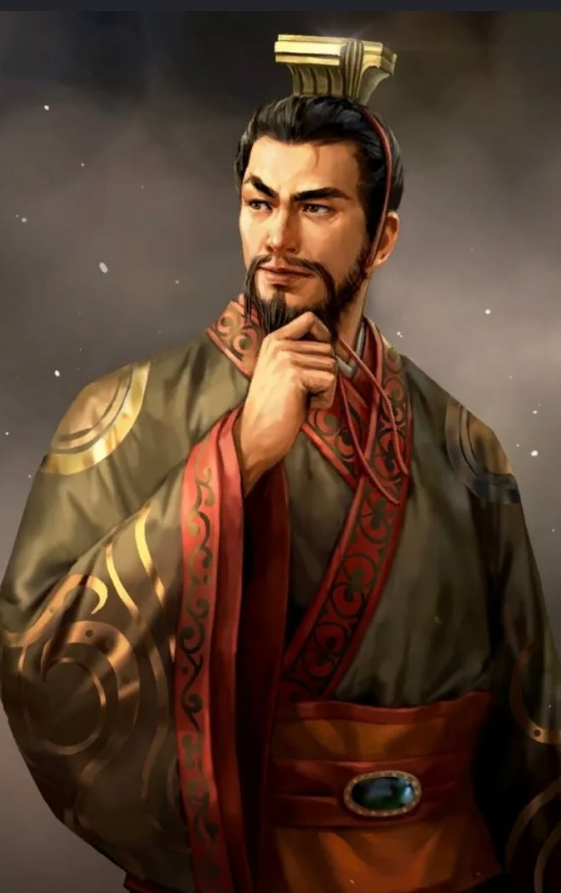

항우를 이기고 한나라를 세워 황제가 된 유방
"한낱 짐승도 제 새끼 귀한 줄 아는데, 전하께선 지금 뭐하시는 겁니까?"
(개국공신 서열 8위 하후영, 도망치면서 자기 자식을 자꾸 마차 밖으로 던지는 유방에게 빡쳐서 일갈)
= 이 짐승만도 못한 새끼
"폐하는 오만무례하여 다른사람들을 업신여기시나 이익이 생기면 천하의 사람들과 함께 그 이익을 같이 누리려고 하십니다. 항우는 그걸 못하는 사람이었습니다."
(개국공신 서열 12위 왕릉, 유방이 자기가 어떻게 항우를 이길 수 있었는지 물었을때)
= 님 좀 무례하고 개싸가지임
대왕께서는 평소에 너무나도 오만무례하십니다. 이제 대장군을 임명한다고 분부를 내리셨으나, 앞으로 모든 병사를 다스릴 대장군을 대하는 태도가 마치 어린아이 대하듯 하십니다. 이런 오만한 태도 때문에 한신 같은 호걸들이 대왕의 곁을 떠나려고 하는 것입니다. 진정으로 대왕께서 한신을 대장군에 임명하시려거든, 반드시 길한 날을 잡아서 목욕재계(沐浴齋戒)하시고, 제단을 세우고 크게 예를 갖추어 식을 거행해야만 모두가 따를 것입니다.
(개국공신 서열 1위 소하, 한신이 유방을 떠났을때 급하게 한신을 쫓아가서 데려온 다음에 한 말)
=님 좀 무례하고 개싸가지임2
폐하께서는 우리들은 하찮은 신하들이라고 여겨 접견을 허락하여 국사를 의논하지 않으시고, 단지 환관 한 사람만을 곁에 두어 우리들과의 관계를 단절하고 계십니다. 어찌하여 옛날 조고(趙高)의 일을 생각하지 않으시는 것입니까?
(개국공신 서열 5위 번쾌, 천하통일 후 번아웃이 온 유방이 대신들도 안만나고 측근 몇몇을 통해서만 일을 처리하자, 빡쳐서 궁문을 열어재끼고 유방에게 일갈)
=너 지금 옛날에 처망한 진나라 새끼들처럼 정치하고 있음 ㅇㅇ
여후 : 이새끼들, 감히 누구 남편한테 지랄이지?